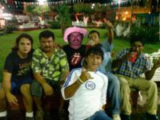

Dios Eolo
 De: La Frikipedia, la enciclopedia extremadamente seria.
De: La Frikipedia, la enciclopedia extremadamente seria.
| De la serie héroes del mundo:
|
| Dios eolo
|
|
|
| Alias
|
Dios eolo
|
| Superpoderes
|
Poleár con la gente... que es mala y apagar camaras
|
| Novia
|
Ella... la niña...
|
| Enemigos
|
La gente mala, el alcohol y frieza
|
| Ciudad donde actúa
|
México
|
| Carácter:
|
Poleador incansable...
|
| ¿Es malo o bueno?
|
Justo
|
| Vestimenta
|
Capa de foami, calzones adentro, sombrero (otorga poderes) bigote de la verdad
|
| Grupo al que pertenece
|
Liga de la Justicia S.A. de C.V. y posteriormente Marvel Comics
|
| Antecedentes
|
La batalla de Namek, el rescate del 9/11 y la batalla de la gente extraterrestre mala
|
| ¿Natural o artificial?:
|
Natural
|
| Secuelas
|
Convulsión poleadora y epilepsia camaresca
|
| Juegos que protagoniza
|
Marvel Ultimate Alliance y Mortal Kombat vs DC Comics
|
«..."¿Señor así venia conduciendo?"»
~ Diós eolo viendo el video del CANACA
«..."No, le puedo mostrar!!"»
~ Diós eolo viendo su video
«..."Yo poleo...con la gente... que es mala... no con la que es buena"»
~ Eolo dandonos a conocer su oficio
«..."Ooooooi nomás...K-paz k-paz...de la sierra!»
~ Eolo haciendo casting para la banda K-PAZ.
«..."Vayase a su casa-No ni mergas-Uste es buena persona"»
~ Eolo defendiendo a pedrito
«..."Hola damitas, soy eolo, me gustan las chicas lindas, todas las mujeres lo son para mí"»
~ Eolo apunto de sufrir un ataque de alucinaciones y epilepsia camarezca
Quizá el mayor héroe meicano de todos los tiempos... desde el inicio de los tiempos el sombrero ha sido la representación maestra de la descendencia Eolo y el batibigote es crucial para sus batallas
a continuación... la más detallada trayectória de este gran Defensor de la gente buena... ahh y también ella... La niña...ALGUNOS PROFETAS Y SEGUIDORES CREEN QUE CON SUS PODERES PUEDE REVIVIR AL CANACA...
Historia
Segun su Bio del National Pornographic, donde el confeso ser un indio bajado del cerro a tamborazos poleasos, al no tener un sítio a donde ir decidio irse a vivir a Tepicoelhoyito, un pueblo con amplias zonas donde ocurrian cosas fuera de lo común en México; así fue como construyo su vida al ser el recogedor de excremento de sus tutores animales de ganado... el día que cambiaria su vida fue el día en que vio un meteorito del tamaño de su cerebro a punto de caer en su habitación de paja y tablas, el no queria sufrir esa perdida, así que hizo el máximo sacrificio que un héroe podia hacér... se puso un sombrero, apunto el proyectil para que impactara en su cabeza y así fue... el meteorito que más tarde fue descubierto con particulas de Poleoníta le otorgo a su sombrero la capacidad de aumentar sus poderes poleadores justicieros tomadores a un 100%, el chakra que tenía en el hígado tuvo un fuerte impacto pues termino siendo punto secundario de sus poderes, el alcohol fue al finál el impulsor, inducidor y amplificador de sus poderes; así hasta ahora sus grandes hazañas han sido reconocidas en todo méxico de entre las cuales destacan:
- La batalla de Namek: El maestro roshi fue el único maestro de Goku... pero lo que quedo oculto entre las sombras fue el hecho de que diós eolo entreno a el mismo Roshi en las artes defensoras... el Kame Hame Ha fue un invento de el Diós Eolo al ver a una gente mala atacando a una gente que era buena... sin saberlo Goku, Diós Eolo iba escondido en los motores de la nave espacial... al quedarse sin gasolina porque goku no queria gastar en ponerle Pemex Magna a su nave, no tuvo más remedio que lanzar rayitos a lo loco para llegar al Planeta (que en realidad eran los pedos del diós para reencender los propulsores) Finalmente Goku perdio la peléa, eolo no tuvo más opcion que polear contra frieza en su 5a fase super maricónyin, la batalla estuvo ganada desde un principio para eolo pues de un puñetazo envio a frieza con el mecánico a que le reconstruyeran media carroceria y chasis completo, posteriormente el le enseño a Goku la teletransportación...
- El rescate del 9/11: Mientras eolo se encontraba el 11 de septiembre en la esquina del WTC comiendose unas quesadillas gringas, vió algo que quizá fue lo que lo hizo transformarse en un Super Poleayín fase 2; el acto indescriptible al ver 2 avionetas estrellandose en las torres gemelas por una gente que era mala lo enfureció al grado de que hizo la teletransportación al piso 58 y destruyo el avión con el puño, más tarde, salvó a más de 500 trabajadores de la torre 2 con su teletransportación, pero repentinamente la torre 1 se desplomó, no tuvo opción que ir al sotano del edificio y cargarlo lo más que pudo... al no aguantar más se acordo de las quesadillas con espinaca que se guardo en las botas sudadas, se las comió y fue tanta su fuerza que sin querer
queriendo derrumbo la torre 1 y 2 de un pedo...
Sus poderes
 Eolo y LdelaG S.A. de C.V.

Eolo y Marvel Héroes A.S. de V.C.

Eolo viendote mientras ves el video
Eolo apagandote la WebCam y el monitor
Eolo haciendo el Frikitest
Eolo con un 55% de estado Friki
Eolo viendo a su papá con la ropa de su mamá
Eolo haciendo un video casero
Eolo viendo las Horchatas que armaban
Eolo con cáncer en el higado
Eolo baneandote con la mirada
Eolo detenido por la policía
Eolo apagando tu computadora
La lista es larga, aunque solamente hálla mencionado 3 incluire una lista de intuiciones e investigaciónes cientificas:
Destacan los que el Mencionó:
- Aliento Poleador: El simple nombre lo dice todo... x_x
- Poleár: La tecnica más letal conocida... que Tae-Kuan-do?, Vale
vergasTodo, KickBoxers, KickShit-zus, KickRetriever, Kickweilers, Moo-duk-kwan, Jiujitsu ni que nada, la técnica olvidada prohibida voladora por exceléncia de los Chaolines, Kungfutoneros, frikis y demás, no es fácil dominar la técnica, al linaje eolo le tomo 50 generaciones de indios chaolines mangakas pajeros dominarla, el único que romperia la cadena sería eolo.
- Psicoquinesis:El primer poder que tiene el diós eolo por el impacto del meteorito asi como enseño la tecnica de teletransportacion a goku, tambien desarrollo la tecnica de detectar Ki maligno y el Ki de gente buena...y... ella... la niña, con el cual el puede ver tu alma con sus poderosos ojos, se dice que es la variante nunca mencionada en Naruto del Sharingan y del Byakugan e incluso una vision mas poderosa que el Rinengan mismo... asi que cuidado ya que con esa vista podria verte
las nueces y el banano en el caso de los hombres y en el caso de las mujeres los melones y la papaya algo mas que tu Ki o alma!! o_O y no es optativo ropa interior de plomo (no creeran que es superman el es mucho mas poderoso) sus poderes visuales y psiquicos no tienen límite, puede saber con precisión, exactitud y con un 99% de acertamiento si eres Buena Gente o Te va a madrear polear por ser Gente malamientras tenga el sombrero puesto nunca sufrira episodios Migrañezcos como Psyduck...
- Tecnoquinesis: El segundo poder que tiene diós eolo por el impacto del meteorito... puede apagar desde un simple vibrador hasta média ciudad con la mirada... ningun aparato se sale de su mirada pervertida... el conoce a la perfección si ese aparato fue creado por gente buena o mala, al igual que si sus refacciones son buenas o provienen de taiwan (malas, chafas
y cagadisimas)
Eolo y la Liga de la Justícia S.A. de C.V.
Después de obtener un largo historial de las batallas de eolo, el supermacho tomó la descición de incluir a eolo a unirse a su equipo poleador del mal... la invitacion le llego por Lampareada, que era más rapido que tu mamá al oirte gimiendo y con el seguro en la puerta... más tarde escubrio que ahí solo lo querian para que ellos pudieran hacer horchatas en su salón de las orgías por lo cual eolo tuvo que cambiarse de ASOCIACIÓN CIVÍL...
su duración no fue prolongada pues a la 4a temporada el se entero que estaba siendo engañado por la mujer pan wonder... su cerebro aumento de capacidad un 70% grácias al sudoku que tenia en su madriguera de la justicia...
Mienbros Aktibos de La LdelaG:
- SuperMacho
- Mujer PanWonder
- Mujer PanBimbo
- Lampareada de Cámara fotográfica
- La mujer Hurráca
- Linterna Amarilla
- CuackMan
- Dróguin
- Marciano de Marte
- Will Smith
- Chango Fandango
Marvel Héroes
Espaiderman, despues de su caida al intentar escalar una pare' en una fiesta de cumpleaños y al ser un fracasado sin vida y pajero, armo los Ministerio de Amor de Marvel A.S. de V.C.; ahí como miembro activo al participar en los foros hentai fundo la asociación y mando a hablarle a Veneno, Matanza, El Troll Azul, Capitán Amierdica, El Hunk, Doña Margara, Thormientame la madre etc etc... pero al igual que la LdelaG ellos también hacian horchatas y se salió, decidio trabajar por su cuenta y descubrio que su cuenta estaba expirada...
Eolo y el clan Uchiha
Fue un ferviente y fétido discipulo de Madera Uchica, pero más tarde fue el quien eliminó al clan Uchiha con su "Katón: Patada-no-poleadora-no-jutsu" e itachi le pidio ser su discipulo... más tarde el le enseño la tecnica de la Susanita tiene un ratón Susanoo, la cual lo protegía de cualquier flatulencia, pedo, macarra, explosion nuclear, minichernobyl, GeorgeBushmanía y eructo existente...
Eolo y los VideoGames
Solamente en 3 juegos es desbloqueable el diós eolo, pues en los demas es imposible verlo:
- MK vs DC COMICS: Si te terminas el juego con todos los jugadores que existen, das 3 vueltas tu consola y rezas un padre nuestro Diós eolo sera jugable, lamentablemente es tanto el poder que siquiera de un golpe que des te explota la tele de LCD en la cara...
- Gears of War 2: Llega al nivel 80 en horda en dificultad locura, si matas a los 60 brumaks que te salen, lo desbloqueara, sus desventajas son que no puede usar armas, pero puedes polear a mano limpia, eres inmune a los sierrazos y a las balas...
- Tekken Mil Ochomil: Si matas 80 veces a Jinpachi Mishima con patada abajo y te haces saiyaJIN kazama lo desbloqueas
Inductores Motivadores que se yo!...
Son variados:
- La gente buena
- La esperanza
- Un digimon llamado Ratamon
- Tu mamá
- El cabrito reposado
- El torres 100
- El torres 1000
- Tu papá
- El centenario
- El cuervo reposado
- Tu hermana
- El ánime
- Beat Angel Escalayer
- Kratos
- Animax
- El instant Fisherman
- Tu mamá
- Que más quieres!?
- Pikachu
El llamado
Lo más importante para un héroe:
- La Poleoseñal: Un foco de 4000 watts se apunta a las nubes para que eolo vea su llamado, para no confundirlo con Batman, le pusieron una DP (no es doble penetracion... sino Diós poleador)
Sabías que?
- ...Eolo es, fue y sigue siendo Huerfano?
- ...Corto con la niña por no saber polear?
- ...Su infancia fue la más dura despues de la de Samara?
- ...Mañana me harán un calzón chino por lo anterior?
- ...Facilmente, eolo mataría 5 veces antes que caiga muerto a IP anónima?
- ...Eolo se hizo el antidopping y resulto positivo?
- ...Es tan poleador que cambió los analisis?
- ...El invento el Poleador?
- ...Su técnica mortal el el Katón: Patada-no-poleadora-no-jutsu?
- ...Mil veces maldice a IP anónima?
- ...El era poleador incansable de la campaña PETA?
- ...Se tiro a la rubia de tetas gordas?
- ...Ha tenido 40 novias?
- ...Es más galán que tu?
- ...Cuando suda, se ven chispitas como en los animes?
- ...Cuando surra, se ve rosita y enrollada como en los animes?
- ...Cuando esta cachondeando, se ve censurado como en los animes?
- ...El ayudo a crear Bleach?
- ...Rugal Bernstein esta inspirado en el?
- ...Al igual que Orocholo?
- ...Le hace doblaje a Marcus Fénix y al Kantus en GoW2?
- ...Si le disparas con la lancer, te apaga el XBOX?
- ...Si ves su video, en 7 días te mueres en una polea?
- ...Si le presentas a Pedrito... hay reunion peda analfabeta?
- ...No ni mergas?
- ...Por el culo te la hinco?
- ...Si se entera que existe este articulo te mata?
- ...Quiere matar a IP anónima?
- ...Chuck Norris es el unico que ha podido librarse de su mirada?
- ...Que el vive en una casa?
Véase también
 Mēxihco Mēxihco
|
Estados Libres y Soberanos Pero Igual Subordinados
Ciudades, Localidades y Ejidos
El Mundo del Espectáculo, la Farándula, Luminarias y otras Vergüenzas
Tribus Urbanas Nacionales
Historia y su Rara Cultura
|
Autor(es):
- Roms
- El Rer 3
- Veni Vidi Vici
- Kevrochi
- Sdrf92
- Filth
- Nestor De Las Arenas Rojas
- Mayo zambada
- Doctor lego
- Arconteberserker
Frikipedia 2005-2016, Licencia
GFDL 1.2 - Extraído por FrikiLeaks